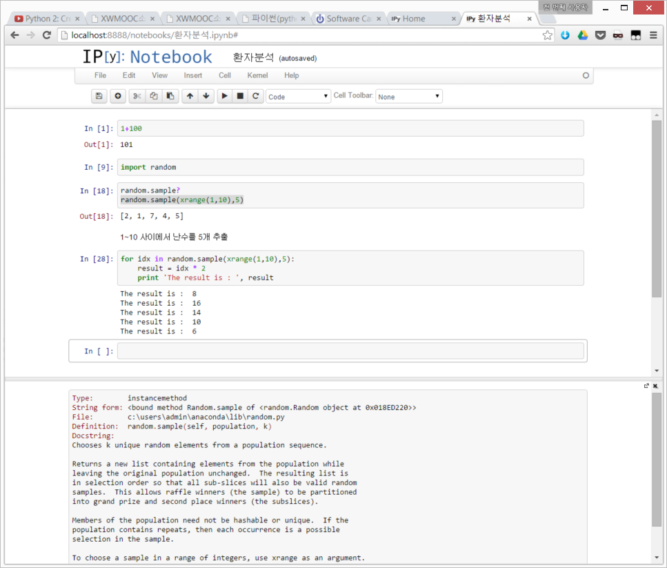

환자 데이터 (Part I)


|
 |
pythontutor.com
파이썬 실습(1): 도전과제(1)
도표를 그려서 다음 프로그램의 각 문장이 실행된 후에 무슨 변수가 무슨 값을 참조하는지 보이세요.
mass = 47.5
age = 122
mass = mass * 2.0
age = age - 20
다음 프로그램이 출력하는 것은 무엇인가요?
first, second = 'Grace', 'Hopper'
third, fourth = second, first
print third, fourth
파이썬 실습(1): 도전과제(2)
element = 'oxygen'
print 'first three characters:', element[0:3]
print 'last three characters:', element[3:6]
first three characters: oxy
last three characters: gen
-
element[:4]의 값은 무엇인가?element[4:]의 값은 무엇인가? 혹은element[:]의 값은 무엇인가? -
element[-1]의 값은 무엇인가?element[-2]의 값은 무엇인가? 상기 해답이 주어졌을 때,element[1:-1]의 값이 무엇인지 설명하시오. -
element[3:3]의 표현식은 빈 문자열(empty string)을 출력한다. 즉, 어떠한 문자도 포함하지 않은 문자열이다. 만약data가 환자 데이터의 배열이라면,data[3:3, 4:4]은 무슨 값을 출력할까?data[3:3, :]은 무슨 값을 출력할까?
파이썬 실습(1): 도전과제(3)
-
왜 모든 플롯이 그래프 상단이 짤리나요? 왜 날짜별 최소 염증값의 플롯에 수직라인이 완벽하게 수직이 아니죠?
-
모든 환자에 대해서 각 일자별로 염증 데이터의 표준편차를 보이는 그래프를 생성하세요.
파이썬 실습(2): 도전과제(1)
-
두 개의 문자열을 "더하는 것"은 사슬처럼 잇게 한다(concatenate). 즉,
'a' + 'b'는'ab'이 된다. 두 개의 매개변수original과wrapper를 받아original의 처음과 끝에wrapper를 씌워 새로운 문자열을 반환하는 함수fence를 작성하세요.print fence('name', '*') *name* -
만약 변수
s가 문자열이면,s[0]는 첫번째 문자이고,s[-1]은 마지막 문자가 된다. 입력문자열의 처음과 끝 문자로만 구성된 문자열을 반환하는 함수outer를 작성하세요.print outer('helium') hm
파이썬 실습(2): 도전과제(1) 해답
-
두 개의 문자열을 "더하는 것"은 사슬처럼 잇게 한다(concatenate). 즉,
'a' + 'b'는'ab'이 된다. 두 개의 매개변수original과wrapper를 받아original의 처음과 끝에wrapper를 씌워 새로운 문자열을 반환하는 함수fence를 작성하세요.print fence('name', '*') *name* def fence(original, wrapper): return wrapper + original + wrapper print fence('name','*') -
만약 변수
s가 문자열이면,s[0]는 첫번째 문자이고,s[-1]은 마지막 문자가 된다. 입력문자열의 처음과 끝 문자로만 구성된 문자열을 반환하는 함수outer를 작성하세요.print outer('helium') hm def outer(input): return input[0]+input[-1] print outer('helium')
파이썬 실습(2): 도전과제(2)
이전에 fence와 outer 함수를 작성했다. 다음을 실행할 때 콜 스택(call stack)이 어떻게 변하는지 다이어그램을 그려보세요.
print outer(fence('carbon', '+'))